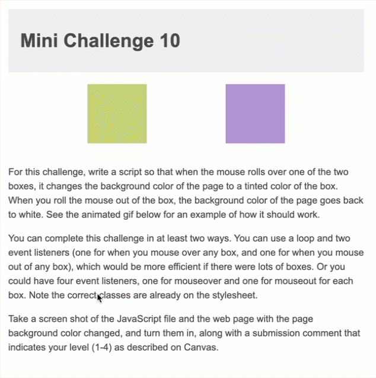

For this challenge, write a script so that when the mouse rolls over one of the two boxes, it changes the background color of the page to a tinted color of the box. When you roll the mouse out of the box, the background color of the page goes back to white. See the animated gif below for an example of how it should work.
You can complete this challenge in at least two ways. You can use a loop and two event listeners (one for when you mouse over any box, and one for when you mouse out of any box), which would be more efficient if there were lots of boxes. Or you could have four event listeners, one for mouseover and one for mouseout for each box. Note the correct classes are already on the stylesheet.
Take a screen shot of the JavaScript file and the web page with the page background color changed, and turn them in, along with a submission comment that indicates your level (1-4) as described on Canvas.
